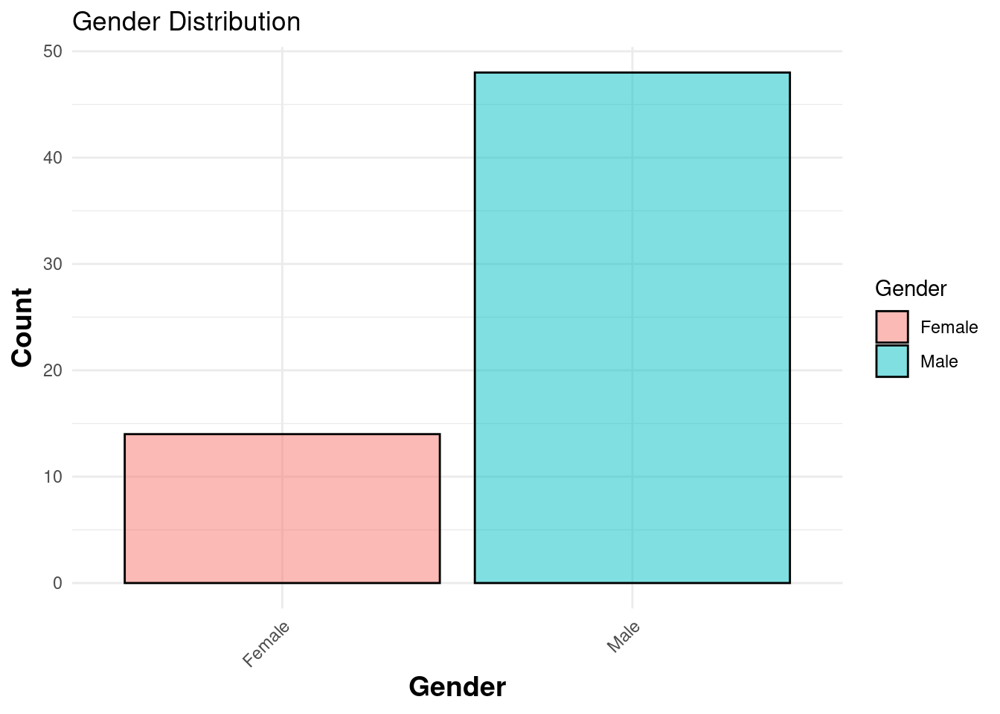
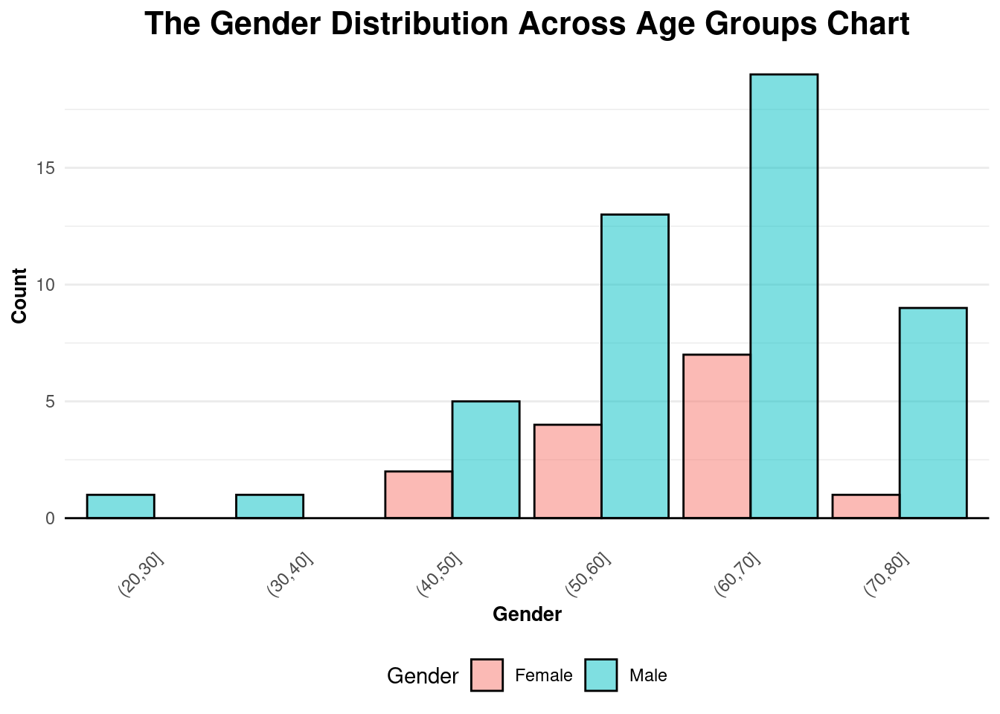
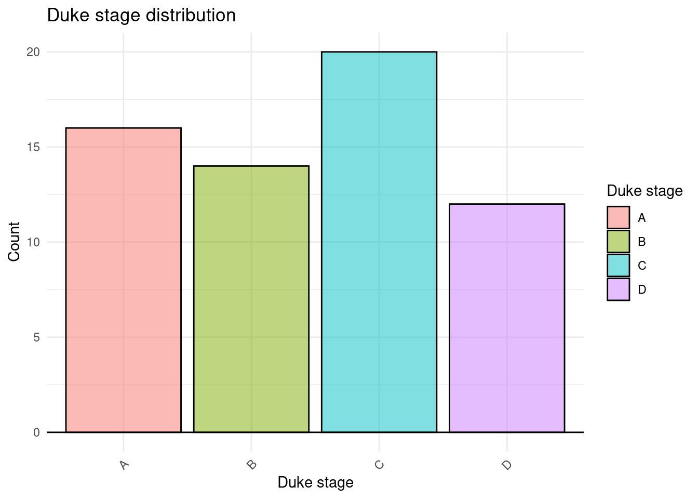
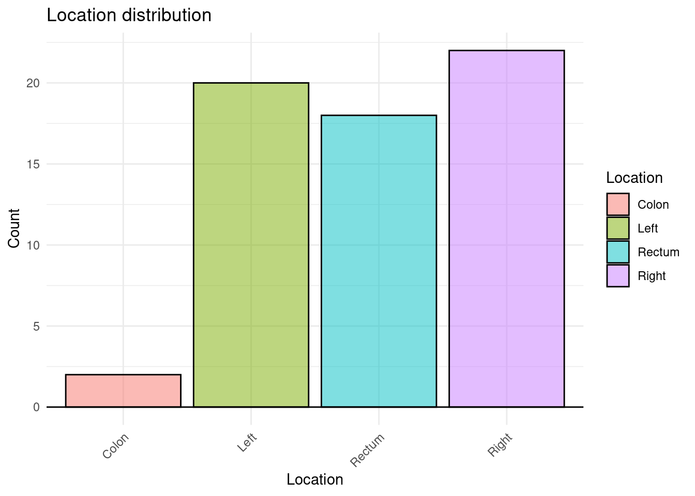
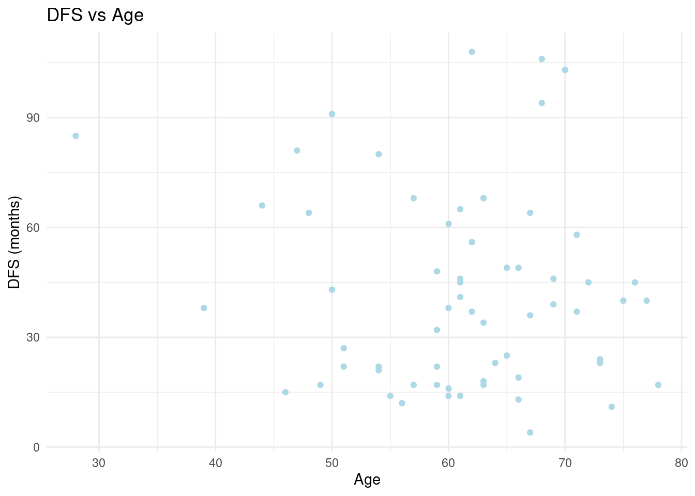

library(readr)
library(dplyr)
library(tidyr)
library(tidyverse)Describtion of data
Load libraries
Loading the data:
data <- read_tsv("../data/03_dat_aug.tsv")Rows: 62 Columns: 1948
── Column specification ────────────────────────────────────────────────────────
Delimiter: "\t"
chr (6): ID_REF, Age_group, Dukes_stage, Gender, Location, DFS_label
dbl (1942): Age, No_stage, metastasis, DFS_event, Adj_Radio, Adj_Chem, DFS, ...
ℹ Use `spec()` to retrieve the full column specification for this data.
ℹ Specify the column types or set `show_col_types = FALSE` to quiet this message.Inspect the dataset
data# A tibble: 62 × 1,948
ID_REF Age Age_group Dukes_stage No_stage metastasis Gender Location
<chr> <dbl> <chr> <chr> <dbl> <dbl> <chr> <chr>
1 GSM877126 62 (60,70] A 1 0 Male Left
2 GSM877127 77 (70,80] B 2 0 Male Left
3 GSM877128 66 (60,70] C 3 0 Female Left
4 GSM877129 72 (70,80] D 4 1 Female Left
5 GSM877130 75 (70,80] C 3 0 Male Left
6 GSM877131 61 (60,70] A 1 0 Male Right
7 GSM877132 59 (50,60] C 3 0 Male Left
8 GSM877133 50 (40,50] B 2 0 Male Right
9 GSM877134 54 (50,60] B 2 0 Male Right
10 GSM877135 68 (60,70] C 3 0 Female Rectum
# ℹ 52 more rows
# ℹ 1,940 more variables: DFS_event <dbl>, DFS_label <chr>, Adj_Radio <dbl>,
# Adj_Chem <dbl>, DFS <dbl>, `117_at` <dbl>, `1007_s_at` <dbl>,
# `1053_at` <dbl>, `121_at` <dbl>, `1255_g_at` <dbl>, `1294_at` <dbl>,
# `1316_at` <dbl>, `1320_at` <dbl>, `1405_i_at` <dbl>, `1431_at` <dbl>,
# `1438_at` <dbl>, `1487_at` <dbl>, `1494_f_at` <dbl>, `1552256_a_at` <dbl>,
# `1552257_a_at` <dbl>, `1552258_at` <dbl>, `1552261_at` <dbl>, …The final dataframe contains 62 observations(rows) and 1946 variables(columns). Each observation is a colorectal cancer sample. Of the 1946 variables, 1 is the sample ID, 10 are the sample metadata, and the remaining 1935 variables are different genes whose expression is measured.
The variables Age and Age_group contain the same information, just in a different format. The same goes for Dukes_stage and No_stage.
The variables DFS and DFS event both give information on Disease-Free Survival. DFS describes the length of time without the disease returning, and DFS event describes whether or not the disease returned.
data |>
count(DFS_event)# A tibble: 2 × 2
DFS_event n
<dbl> <int>
1 0 25
2 1 37Out of the 62 patients, 25 showed disease free survival, while 37 showed a return of the disease.
Describe the dataset
Age and DFS ’Simple statistics
The relationship between age and DFS
# Compute summary statistics for each numeric feature
data |>
select(Age, DFS) |>
summarise(across(everything(), list(
min = min,
max = max,
mean = mean,
sd = sd
), na.rm = TRUE)) |> #Format the summary statistics into a table
pivot_longer(
cols = everything(),
names_to = c("Feature", "Statistic"),
names_sep = "_",
values_to = "Value"
) |>
arrange(Feature, Statistic) |> #Transform back to wide format
pivot_wider(
names_from = Statistic,
values_from = Value
)Warning: There was 1 warning in `summarise()`.
ℹ In argument: `across(...)`.
Caused by warning:
! The `...` argument of `across()` is deprecated as of dplyr 1.1.0.
Supply arguments directly to `.fns` through an anonymous function instead.
# Previously
across(a:b, mean, na.rm = TRUE)
# Now
across(a:b, \(x) mean(x, na.rm = TRUE))# A tibble: 2 × 5
Feature max mean min sd
<chr> <dbl> <dbl> <dbl> <dbl>
1 Age 78 61.1 28 9.57
2 DFS 108 41.8 4 26.3 Visualizing data
pl <- data |>
count(Gender) |>
ggplot(aes(x = factor(Gender),
y = n,
fill = Gender)) +
geom_col(colour = "black",
alpha = 0.5) +
labs(title = "Gender Distribution",
x = "Gender",
y = "Count",
fill = "Gender") +
theme_minimal() +
theme(axis.text.x = element_text(angle = 45, hjust = 1),
axis.title.x = element_text(size = 14, face = "bold"),
axis.title.y = element_text(size = 14, face = "bold"))
pl |>
ggsave(filename = "04_gender_distribution.png",
path ="../results/")Saving 7 x 5 in imagepl
pl <- data |>
count(Gender, Age_group)|>
ggplot(aes(x = Age_group,
y = n,
fill = Gender)) +
labs(title = "The Gender Distribution Across Age Groups Chart",
x = "Gender",
y = "Count",
fill = "Gender"
) +
geom_col(position = position_dodge(
preserve = "single"),
colour = "black",
alpha = 0.5) +
geom_hline(yintercept = 0) +
theme_minimal() +
theme(legend.position = "bottom",
panel.grid.major.x = element_blank(),
plot.title = element_text(hjust = 0.5, size = 16, face = "bold"),
axis.text.x = element_text(angle = 45, hjust = 1),
axis.title.x = element_text(size = 10, face = "bold"), # Modify x-axis title font size and make it bold
axis.title.y = element_text(size = 10, face = "bold") # Modify y-axis title font size and make it italic
)
pl |>
ggsave(filename = "04_gender_age_group_distribution.png",
path = "../results/")Saving 7 x 5 in imagepl
pl <- data|>
count(Dukes_stage) |>
ggplot(aes(x = Dukes_stage,
y = n,
fill = Dukes_stage)) +
labs(title = "Duke stage distribution",
x = "Duke stage",
y = "Count",
fill = "Duke stage"
) +
geom_col(colour = "black",
alpha = 0.5) +
geom_hline(yintercept = 0) +
theme_minimal() +
theme(axis.text.x = element_text(angle = 45,
hjust = 1))
pl |>
ggsave(filename = "04_dukes_stage_distribution.png",
path = "../results/")Saving 7 x 5 in imagepl
pl <- data|>
count(Location) |>
ggplot(aes(x = Location,
y = n,
fill = Location)) +
labs(title = "Location distribution",
x = "Location",
y = "Count",
fill = "Location"
) +
geom_col(colour = "black",
alpha = 0.5) +
theme_minimal() +
geom_hline(yintercept = 0) +
theme(axis.text.x = element_text(angle = 45,
hjust = 1))
pl |>
ggsave(filename = "04_dukes_stage_distribution.png",
path = "../results/")Saving 7 x 5 in imagepl
pl <- data |>
ggplot(aes(x = Age,
y = DFS)) +
geom_point(color ="lightblue") +
labs(title = "DFS vs Age",
x = "Age",
y = "DFS (months)") +
theme_minimal()
pl |>
ggsave(filename = "04_DFS_age_distribution.png",
path = "../results/")Saving 7 x 5 in imagepl